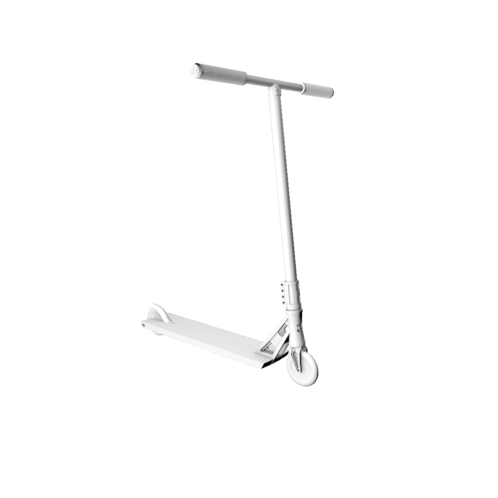

what is it?
S T A R T
The first riders of extreme scooter discipline in the 90s - early 2000s used models of children's scooters for riding.
Their design was enhanced by the addition of additional elements.
The wheel disks of such scooters were made of plastic and had a diameter of 100 mm.
At the request of the riders, Eagle Supply, a manufacturer of roller skis, made the first stunt scooter wheels with an aluminum disc.
Along with this, Razor and Micro began to produce scooter models without folding mechanisms.
There are small companies founded by riders producing components TSI, PROTO, WEE, etc.
D E V E L O P M E N T

By 2010, there appeared companies specializing in the production of extreme scooters: MGP, District, Blunt. Dimension standards have changed: the diameter of the wheels has increased, decks and steering wheels have become wider and higher. Since then, each season, brands have been producing new upgraded parts.
N O W
In 2019, stunt scooters are provided by more than 50 brands from all over the world, there are ready-made models for each level: from a beginner rider to a professional athlete. There are also various subspecies of stunt scooters for the internal disciplines of scooter sports: park, street, dirt.